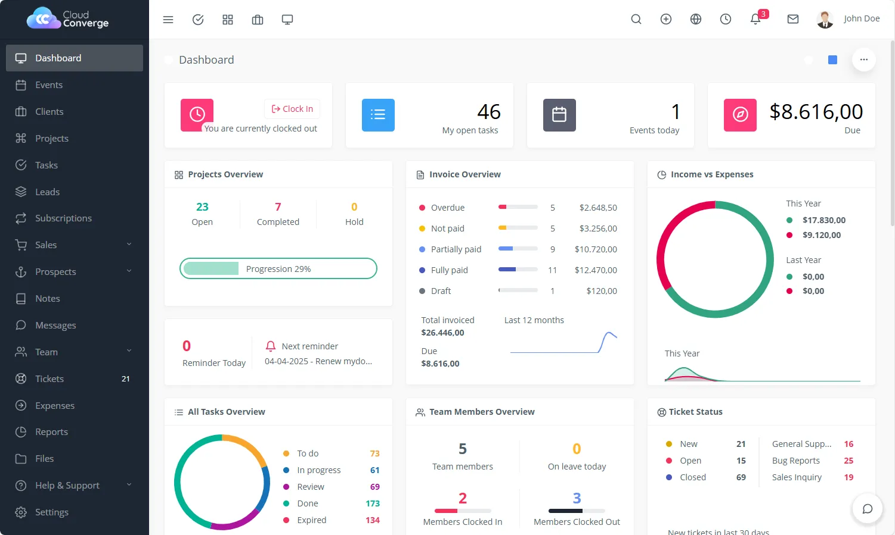
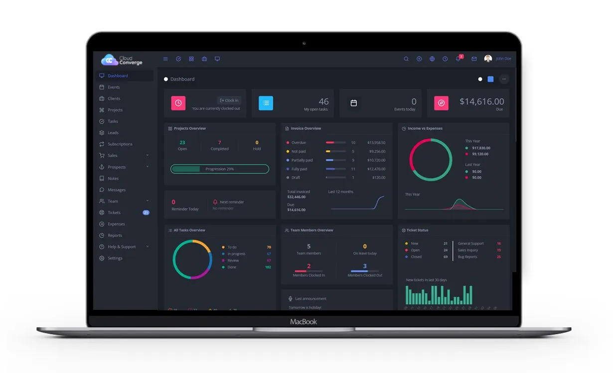
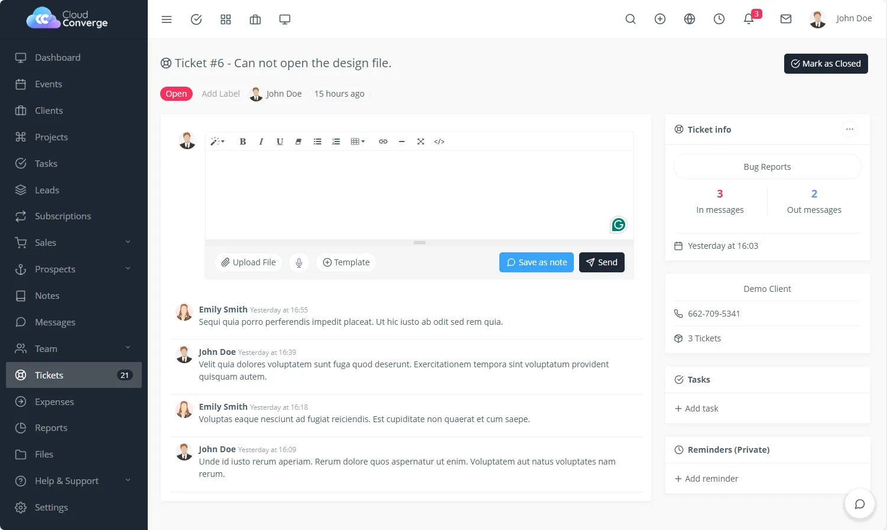
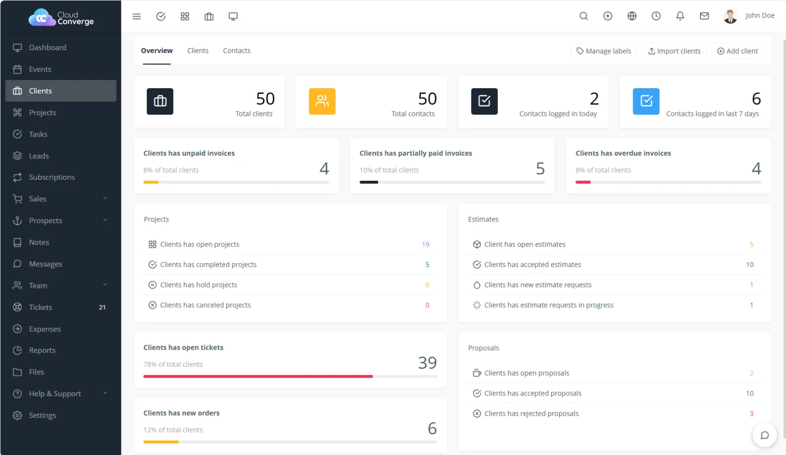
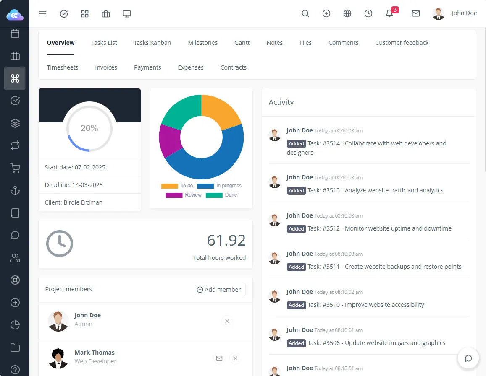
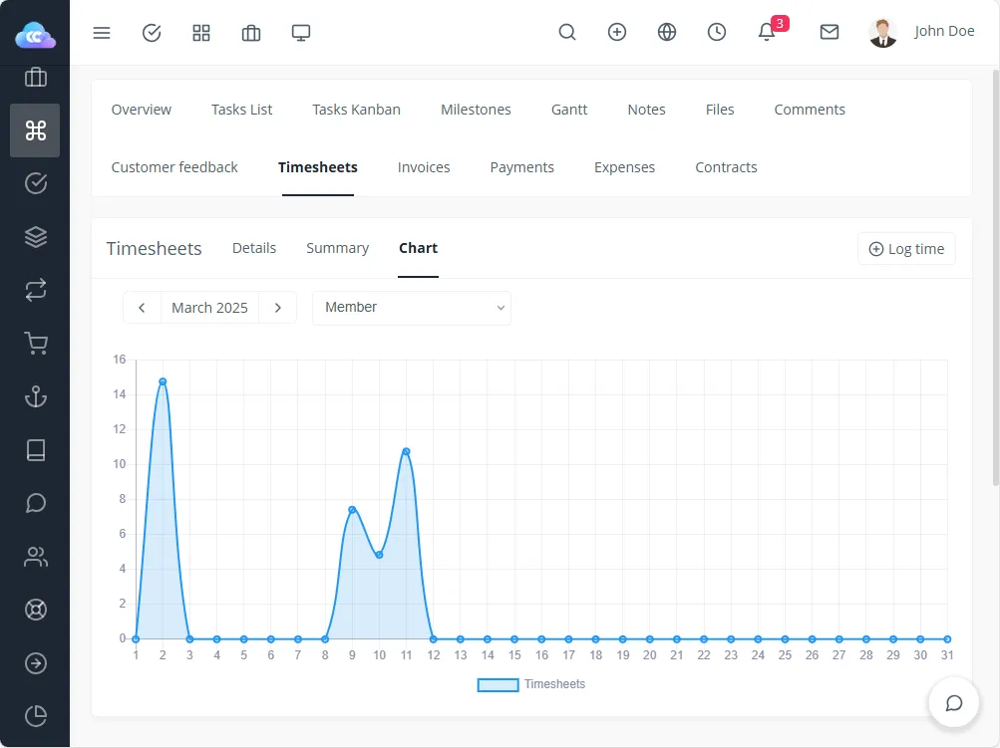
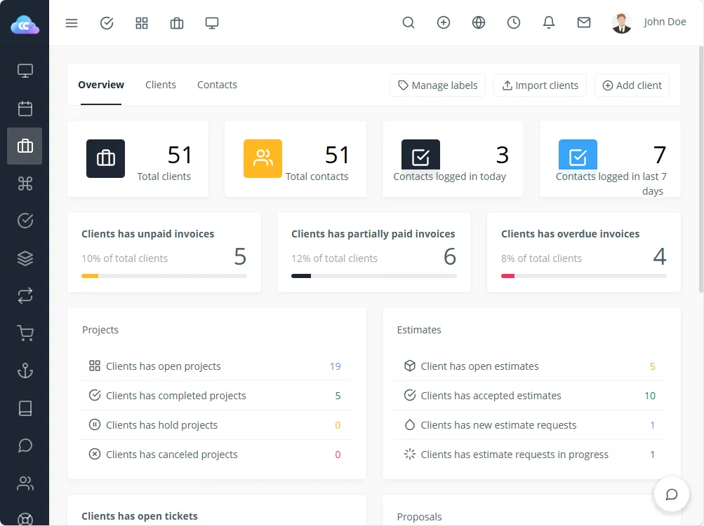

★★★★★
“Good experience overall. My 3rd project with them overall. Will highly recommend using them.”

Tom WymanWeb Designer
At Cloud Converge, we have developed a powerful, scalable, and highly adaptable Project Management and Customer Relationship Management (CRM) solution tailored to meet the diverse needs of modern businesses. Our platform is designed to centralize and streamline daily operations, enabling organizations to manage everything from client interactions to internal team collaboration within a unified system.
Our solution is built with flexibility in mind, allowing for customization based on your business model-whether you’re a service provider, digital agency, or enterprise looking to optimize operations.

Contact Us

By converting leads into clients, you can expand your customer base and create additional sales opportunities.


Streamline online orders for projects, services, and products.
Easily send invoices to clients and receive online payments.
Accept remote payments from clients in multiple currencies.
Automate invoicing and payments with seamless subscription management.
Enhance
Productivity
Follow up
Profit & Loss
Branding &
Personalization
Efficiently manage project planning and cost monitoring with timesheets.

Control what your clients can access with customizable permissions:

We have clients from all over the world, including US, UK, Australia, Middle East, Canada and India.
We have developed numerous complete web & mobile app for our clients across the globe.
We as an organization believe that client satisfaction begins from requirements definition phase to design, feedback cycle and golive.
We operate on all the top technology stacks such as .NET Core, MERN, MEAN, React Native, Swift, Java and many more.


“Good experience overall. My 3rd project with them overall. Will highly recommend using them.”
Tom WymanWeb Designer
“Its been a pleasure to work with CloudConverge.io team. They have a great team, including their Customer Success Manager who was great help to us. We have been doing great during our peak sale season, without any hickup. Great job guys.”

Richard HellerCEO
“We are really happy with how quickly we were able to launch the project, they had a really seamless process of getting our existing database and agents onboard, manage their leads & properties. We will definitely recommend using them for any web solution project. They have a great team in place with a talent to understand business intricacies.”

Samuel CorrensLong Island RE
“We were looking to modern a lot of aspects within our organization including migration to Business Central as ERP, implementing Microsoft 365, Cloud Services and Web Development. We at Kabu Projects and Atmos are happy to refer Cloud Converge team and all IT services. They are well-versed with the best practices, have a good project management and software team.”
Kabu Projects
“We are a non-profit were organizing a large event which includes delegates and attendees from all over the globe. The way Cloud Converge team handled our web presence, online payment system was truly exceptional. The entire process including site design, implementation of CRM, integration with partners, live dashboards were all delivered in record time. Most of all, because of the high footfall on the event, we had thousands of registration on launch itself, the way the entire system worked effortlessly was a great experience for all stakeholders.”

Entrepreneur’s Organization Gurgaon
“We are very happy with the project delivered by the CC team. The entire development process has worked seamlessly for us, with regular updates, thorough testing of deliverables, great ideas throughout the development process.”

Barry SarnoffCEO